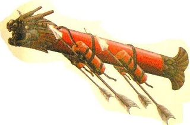

Rakety🚀
Jan Černohorský
Obsah
- Historie
- Počátky
- 20. století
- Současnost
- Základní primcip
- Palivo
Počátky
Čína
- vynález střelného prachu
- "ohnivé šípy"
- cca 11. století

Evropa
- inspirace Araby
- 14. století
- nahrazeny dělostřelectvem
- ohňostroj
20. století
WWI
- pouze tuhá paliva
- pouze válečné účely
WW2
- zdokonalení vojenských raket
- i kapalné, ale stále převážně tuhé
Sputnik 1
1957
První umělé těleso na orbitě.Jurij Gagarin
1961
První člověk na orbitě.Apollo 11
1969
První člověk na měsíci.Současnost
Modul Zarya
1998
První modul ISS na orbitě.Falcon 1
2008
První soukromě financovaná raketa na orbitě.Falcon Heavy
2018
Elon vystřelil svoje auto do vesmíru.Základní princip
Zákon o zachování hybnosti
Celková hybnost izolované soustavy těles se nemění.
- Wikipedie
Palivo
Tuhé
- Není oddělená nádrž a spalovací komora
- Výhody
- Jednoduchá technologie
- Nevýhody
- Nedá se ovládat, vypnout

Tekuté
- Ovládá se pumpami
- Palivo se míchá až ve spalovací komoře
- Výhody
- Dá se ovládat
- Dá se přečerpávat
- Nevýhody
- Velmi složitý motor

Zdroje
- Česká Wikipedie - Raketa
- Anglická Wikipedie - Rockets, History of Rockets, Timeline of rocket and missile technology, Timeline of spaceflight
- Quora - What are the pros and cons of using solid fuel vs liquid fuel in rockets?
Zdroje obrázků
- https://www.teslarati.com/wp-content/uploads/2018/02/Falcon-Heavy-side-booster-landings-SpaceX-e1518547599594.jpg
- https://sites.google.com/site/welcometoancientchina/_/rsrc/1317314659699/anicent-chinese-weapons/multistagerocket2.jpg?height=211&width=320
- https://www.thoughtco.com/thmb/JEc7HPEko6DsQVswvbUNQIS6BlY=/400x0/filters:no_upscale():max_bytes(150000):strip_icc()/Fire-arrow.-5c6dce6546e0fb00012d31e7.jpg
- https://www.ancient-code.com/wp-content/uploads/2017/11/Ancient-Rockets.jpg
- http://www.qmediaproductions.com/wp-content/uploads/2016/02/old-nasa-rockets.jpg
- https://images.fineartamerica.com/images/artworkimages/mediumlarge/1/sputnik-1-satellite-erik-simonsen.jpg
- https://www.dailymaverick.co.za/wp-content/uploads/ec33408a5a65418c245c3d3ff5b7db12.jpg
- https://fsmedia.imgix.net/55/45/89/8b/df9a/4886/8f64/b70def0fefb3/apollo-11.jpeg?rect=0%2C42%2C1255%2C628&auto=format%2Ccompress&dpr=2&w=650
- https://upload.wikimedia.org/wikipedia/commons/d/db/Zarya_from_STS-88.jpg
- https://www.youtube.com/watch?v=PHr50QsXZkY
- https://www.nasaspaceflight.com/wp-content/uploads/2017/12/BCK_4062-1.jpg
- https://d2t1xqejof9utc.cloudfront.net/screenshots/pics/3caab7ab1b658c3218a521cb7a6e73c3/large.gif
- https://slideplayer.com/slide/10398177/35/images/19/Explosion+%28ex.+Balloon%2C+Rocket%29.jpg
- https://www.popsci.com/sites/popsci.com/files/styles/1000_1x_/public/import/2013/images/2011/12/rocketfuel.jpg?itok=G4qRsrgC
- https://i.ytimg.com/vi/JJ2DjEpbOIU/maxresdefault.jpg